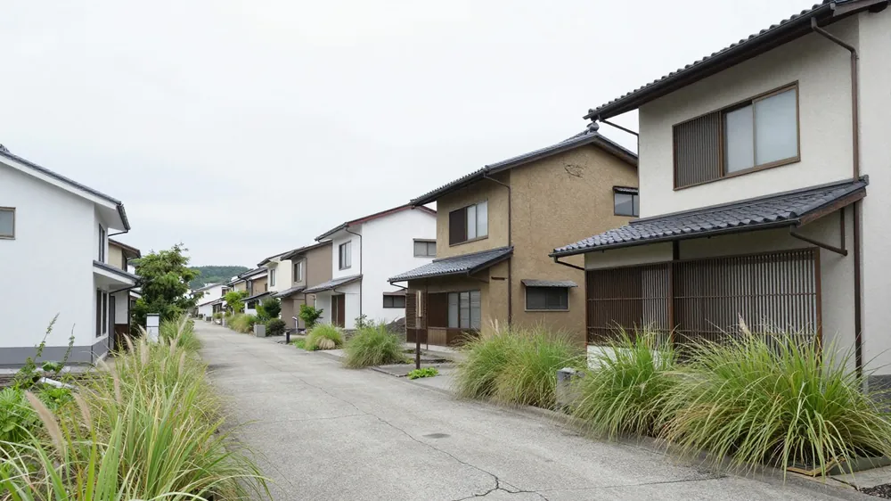

しかし、公的な制度として「猶予（ゆうよ）」という選択肢が存在します。これは、一時的な資金繰りの難しさを理由に、納税や保険料の支払いを先延ばしにできる仕組みです。
払えないまま放置するとどうなるか
税金や社会保険料を払えないまま放置すると、最終的には強制執行や財産の差し押さえといった厳しい措置が講じられる可能性があります。しかし、その前に知っておきたいのが、国や制度側が用意している「猶予」の存在です。
特に個人事業主や中小企業の経営者にとって、税金や社会保険料は事業の存続に関わる大きな負担です。一時的な資金不足で事業をたたむのは、本人だけでなく従業員や家族の生活にも影響します。そのため、いきなり最悪のシナリオを想定するのではなく、まず公的なサポート制度を利用できるかどうかを確認することが重要です。
なお、ここでいう「猶予」は、単に期限を延ばすだけでなく、特定の条件下では延滞税の一部免除や、担保の提供が不要になる場合もあります。まずは、この制度があるという事実を知り、焦らずに正しい手続きを踏むことが、資産や事業を守る第一歩となります。
換価の猶予・納税の猶予とは
国税庁の案内によると、税金の支払いを先延ばしにする制度には、主に「換価の猶予」と「納税の猶予」の2種類があります。これらはどちらも、納税者が一時的に納付が困難な状況にある場合に、税務署長の判断によって認められることがあります。
まず「換価の猶予」とは、原則として1年以内の期間で、税金の納付を先延ばしにできる制度です。この制度が適用されるためには、5つの要件すべてを満たす必要があります。その中でも特に重要なのが、「一時に納付すると事業の継続や生活の維持が困難になるおそれがあること」という条件です。つまり、ただ単に「払いたくない」のではなく、経済的な理由で本当に払えない状況にあることが前提となります。
一方、「納税の猶予」は、災害や病気、事業の休廃業、あるいは事業の著しい損失などの具体的な事由がある場合に認められることがあります。こちらも原則として1年以内の期間が設定されます。
どちらの制度も、申請によって認められるものですが、既に国税の滞納がある場合でも、税務署長の職権により換価の猶予が受けられる可能性があります。また、猶予が認められた期間に対応する延滞税の一部、場合によっては全部が免除されるというメリットもあります。
猶予が認められる期間と条件
猶予制度を利用するにあたり、最も気になるのが「どれくらい先延ばしにできるか」という点です。国税庁の案内では、換価の猶予も納税の猶予も、原則として1年以内の期間で認められることがあります。

ただし、やむを得ない理由でこの猶予期間内に完納できない場合は、当初の猶予期間と合わせて最長2年を超えない範囲で延長が認められることがあります。この延長は自動的に適用されるわけではなく、状況に応じて申請する必要があります。
また、猶予を受けるためには、原則として担保の提供が求められます。これは、納税者が約束通りに納付することを保証するためのものです。しかし、以下のいずれかに該当する場合は、担保の提供が不要になる場合があります。
- 猶予を受ける金額が100万円以下の場合
- 猶予期間が3か月以内の場合
- 担保にできる財産がない場合
これらの条件は、資金繰りが苦しい人にとって大きな救いとなります。特に「担保にできる財産がない場合」は、すでに資産を処分している人や、現金が手元に残っていない人にとって、猶予制度を利用する際のハードルを下げる重要なポイントです。
社会保険料にも同様の猶予制度がある
税金だけでなく、厚生年金保険料や健康保険料などの社会保険料についても、同様の猶予制度が存在します。日本年金機構の案内によると、厚生年金保険料等については、換価の猶予・納付の猶予の制度があり、納期限から6か月以内に管轄の年金事務所へ申請することで、原則1年以内の猶予が認められる場合があります。
社会保険料の猶予は、事業の継続や従業員の雇用維持にとって非常に重要です。しかし、注意点もあります。社会保険料の猶予は、申請対象の月以外に保険料等の滞納がある場合、原則として認められません。つまり、特定の月だけではなく、他の月にも未納がある場合は、猶予の対象外となることがあるのです。
この違いを理解しておくことが重要です。税金の猶予は、既に滞納があっても職権により認められる可能性がありますが、社会保険料の猶予は、他の月の滞納があると原則として認められないという制約があります。したがって、社会保険料の支払いが遅れそうになった場合は、早めに年金事務所へ相談し、対象となる月の滞納がないことを確認することが必要です。
まとめ
税金や社会保険料の支払いが困難な場合、業者に頼る前に、まず公的な猶予制度を検討することが重要です。国税庁や日本年金機構の制度を活用すれば、事業の継続や生活の維持が可能になる場合があります。
特に、換価の猶予や納税の猶予は、特定の要件を満たせば原則1年以内の猶予が認められ、場合によっては延滞税の免除や担保の免除も受けられます。社会保険料についても同様の制度がありますが、他の月の滞納がないことが条件となる点に注意が必要です。
資金繰りが苦しいと感じたら、まず税務署や年金事務所へ相談し、猶予制度の利用可否を確認することをお勧めします。焦らずに正しい手続きを踏むことで、事業や生活を守ることができるかもしれません。
本記事は一般的な制度の説明です。個別の事情は司法書士・弁護士・税理士などの専門家にご確認ください。最終確認日: 2026年11月15日